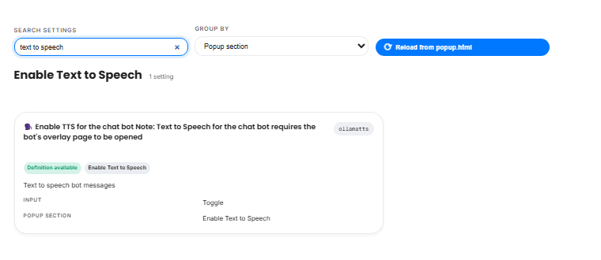
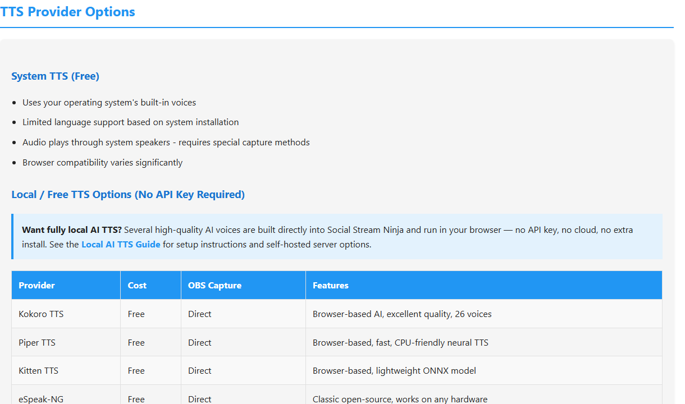

Quick Choice
If you only remember one thing: for OBS, start with a browser/provider voice such as Kokoro, Piper, Kitten, eSpeak, OpenAI-compatible, Google, ElevenLabs, Speechify, or Gemini. Plain system TTS is simple, but OBS Browser Source usually cannot capture it directly.
| What You Want | Use This First | Why |
|---|---|---|
| Free voice in OBS | Kokoro, Piper, Kitten, or eSpeak | Audio plays from the browser page, so OBS can capture it. |
| Best quality with less local setup | Cloud provider or OpenAI-compatible provider | Good voices, but account/API costs may apply. |
| Use Windows or Mac system voices | System TTS with speech=en-US | Works for listening on the computer, but OBS audio capture is harder. |
| Run your own voice server | Custom/local TTS with openaiendpoint | Private and flexible, but the endpoint and voice names must match your server. |
1. Turn On TTS
In the settings reference, search for text to speech. In the popup, the matching setting is under the chat bot and TTS options. Enable only the TTS features you plan to use.

For overlay URLs, TTS is enabled with a language value such as:
dock.html?session=YOUR_SESSION&speech=en-US
2. Pick A Provider
The provider decides where the voice is generated. Built-in browser/local providers are usually the easiest way to get free audio into OBS.

Good first tests:
dock.html?session=YOUR_SESSION&speech=en-US&ttsprovider=kokoro
dock.html?session=YOUR_SESSION&speech=en-US&ttsprovider=piper
dock.html?session=YOUR_SESSION&speech=en-US&ttsprovider=kitten
3. Avoid The OBS System TTS Trap
System TTS uses the operating system speech engine. OBS Browser Source does not directly capture that system-level speech. If you use system TTS, route desktop audio, use a virtual cable, or switch to a browser/provider TTS mode.

Simpler OBS path: use a provider like Kokoro, Piper, Kitten, eSpeak, OpenAI-compatible, Google, ElevenLabs, Speechify, or Gemini and enable OBS Browser Source audio control.
4. Local Server TTS
A local TTS server is useful when you want private voices, a specific voice model, or a server such as Kokoro-FastAPI or openedai-speech. The page that plays TTS must be able to reach the endpoint.

dock.html?session=YOUR_SESSION&speech=en-US&ttsprovider=customtts&openaiendpoint=http://127.0.0.1:8124/v1/audio/speech&voiceopenai=af_bella
localhost means the computer running the page. If your TTS server is on another computer, use that computer's LAN IP or run the bridge on the OBS computer.
5. Test In This Order
- Open the dock URL in a normal browser first, outside OBS.
- Send a short chat message and confirm the dock receives it.
- Confirm the browser speaks.
- Move the same URL into OBS Browser Source.
- If OBS is silent, check whether you are using plain system TTS or a provider voice.
Common Fixes
- No voice list: try Chrome or Edge. Some browsers have limited speech support.
- OBS is silent: switch away from plain system TTS or route desktop audio/virtual cable audio.
- Kokoro is slow: try Piper, Kitten, eSpeak, a smaller voice, or a server/bridge setup.
- Local server returns errors: check endpoint URL, CORS, voice name, model name, and whether the server can be reached from the OBS computer.
- Voice name fails: Kokoro names can look like
af_bella; OpenAI/openedai-speech names can look likenovaorecho. Use a voice your server supports.
Full reference: TTS guide and Local AI TTS guide.